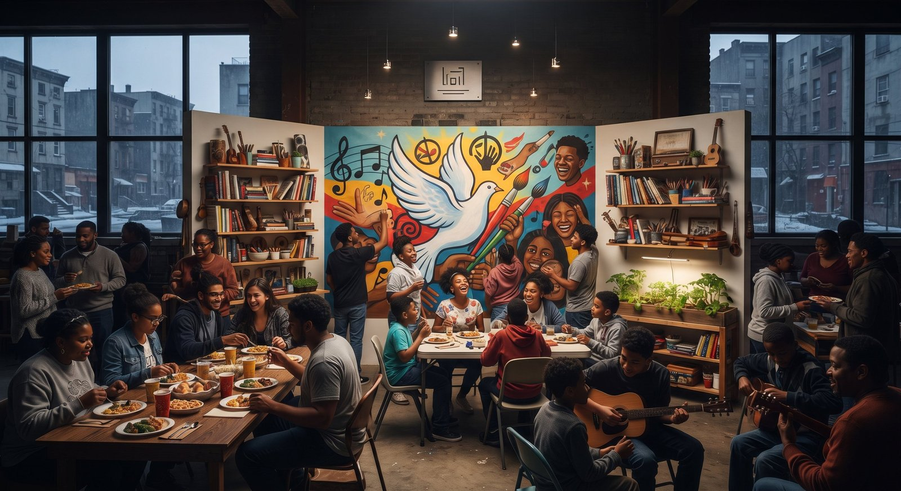

Imagen: generada con Inteligencia Artificial
Los espacios de ocio ocupan un lugar contradictorio en la estructura de la vida social. Son parte fundamental de la cotidianidad, pero no son reconocidos como infraestructuras necesarias desde el ámbito institucional.
Esta falta de validación limita su desarrollo y empuja a muchos centros a operar en los márgenes de la informalidad, un terreno donde los riesgos operativos y sociales aumentan.
A su vez, estos riesgos refuerzan los estereotipos negativos que pesan sobre ellos, cerrando un círculo vicioso en el que el prejuicio termina confirmándose mediante la degradación del entorno. No es solo la percepción social la que produce el problema, sino también la ausencia de políticas que reconozcan y regulen estos nodos de encuentro como elementos de la salud urbana y la economía local.
Más que simples espacios de entretenimiento, estos entornos pueden entenderse como lo que han denominado “terceros espacios”: lugares distintos al hogar y al trabajo donde las personas conviven, construyen vínculos y desarrollan identidad colectiva. (Oldenburg, 1989) Su relevancia radica en que permiten formas de interacción social que difícilmente se generan en otros ámbitos, especialmente en contextos donde las oportunidades de integración son limitadas.
Diversas investigaciones, incluyendo análisis de la OECD (2019) y estudios del World Bank (2011), han mostrado que la participación en actividades culturales y artísticas, así como la existencia de espacios de integración social, puede fortalecer el tejido social y generar un sentido de pertenencia genuino, reduciendo factores de riesgo asociados a la violencia, especialmente en poblaciones jóvenes. Como señala la UNESCO (2013): “La cultura es un facilitador y un motor del desarrollo sostenible”, lo que incluye su papel en la cohesión social y la prevención de conflictos. Sin embargo, este potencial se debilita cuando el Estado confunde el control con la seguridad, optando por la restricción en lugar de la integración.
En ciudades como Berlin, estos espacios han sido incorporados en políticas públicas (Clubcommission Berlin, 2021), permitiendo regularlos y reducir la informalidad, ya que ignorarlos no elimina sus riesgos, sino que los desplaza hacia entornos donde es más difícil intervenir, reforzando el mismo ciclo que podría atenderse desde la regulación.
Entender el arte y la cultura como componentes estratégicos en la construcción de paz implica reconocer estos espacios como parte esencial de la vida colectiva. En contextos donde la violencia se reproduce desde la fragmentación social, abrir y sostener estos espacios puede ser una de las formas más concretas de construir alternativas.
CIPMEX · Centro de Investigación para la Paz México, A.C. · Paz que se piensa, paz que se construye